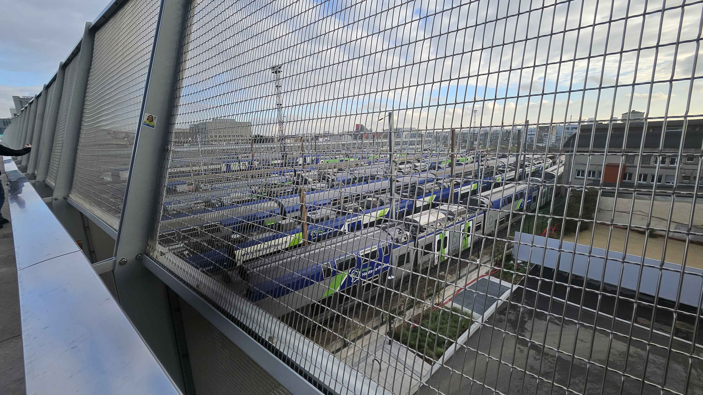
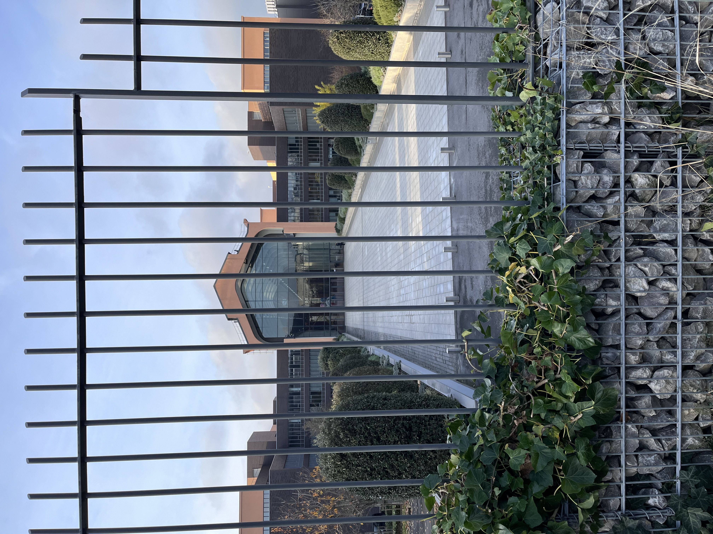
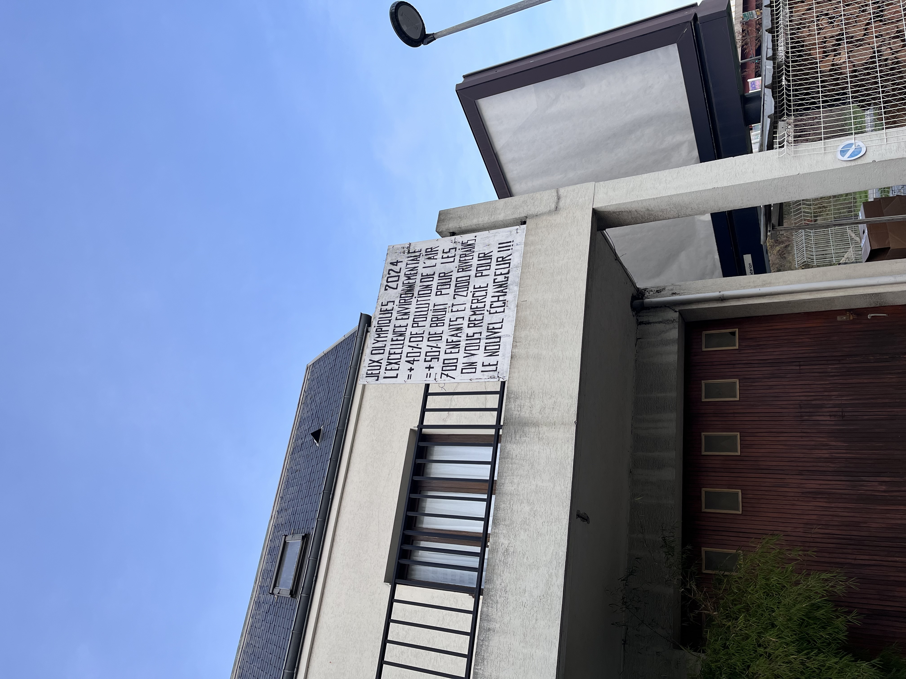

Pont (franchissement urbain Pleyel)
reliant 2 espaces de séparations du département de Seine Saint-Denis, département le plus pauvre de France, ce qui permet de redynamiser le département et augmenter les intéractions entre les différentes zones du Seine Saint Denis, qui interagissent peu entre eux

Centre Aquatique Olympique et Stade De France
Vue du Stade De France et du Centre Aquatique Olympique, dont ce dernier a été victime de fake news et critiques. Toutefois, ces 2 bâtiments permettent de redynamiser le département de Seine-Saint-Denis, plus pauvre de France. Ce Centre Aquatique possède notamment des panneaux solaires et va être servie après les JO (dont a été servie durant les JO en tant que zone pour les épreuves aquatiques comme le water polo), en zone de sports non seulement aquatique mais aussi non aquatique comme paddle, tennis pour tout publique, ce qui va notamment permettre aux nombreux enfants de Seine-Saint-Denis à apprendre à nager (notamment grâce aux JO) car beaucoup d’entre eux ne savent pas nager
Suzanne lenglen building
The building where the french athletes stayed during the olympics

Cafeteria
An old factory that got turned into a cafeteria for the JO 2024

The old buildings of Saint denis
One of the old residents of this neighborhood, who wasnt happy with all the changements in his area decided to put up a sign expressing his dissatisfaction